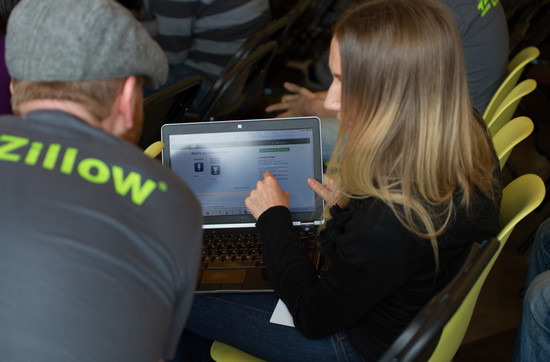

Can't imagine my life without electronic music, and like to go see shows on the reg - will even travel for it. My favorite festivals include FreakNight Seattle, EDC Vegas, Coachella, Hard Summer, Holy Ship edm cruise, EZoo, and others; on the to-do list - TomorrowLand Belgium and Ultra Europe.
Would like to get into mixing and production as my next hobby.
Apart from my job responsibilities evaluating and mentoring startups, I love contributing to internal quarterly innovation and hack weeks on Biz Dev and Strategy. However, after this course, am hoping to finally be able to participate in internal and external hackathons, as well as personal projects, as a technical team member.
I enjoy combining visits to fun destinations with yoga and surfing retreats. So far, have traveled to Tulum Mexico, Nicaragua and Panama on yoga or yoga/surf retreats.
I also am a certified yoga instructor and used to teach in Seattle and San Francisco, but other priorities've gotten in the way since. My teaching style is rigorous/athletic yoga to electronic music beats, preferably heated.